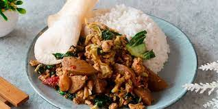

Nasi Gila

Deskripsi
Nasi gila bisa menjadi pilihan menu untuk makan malam saat malas memasak.
Bahkan, kamu pun bisa membuatnya untuk anak dengan mengurangi cabai dan saus pedasnya.
Berikut resepnya:
- nasi hangat
- 2 butir telur
- 100 gram ayam
- 5 butir bakso sapi
- iris tipis 2 buah sosis
- iris tipis 1 buah bawang bombai ukuran kecil
- iris tipis 3 siung bawang putih
- memarkan dan cincang halus 3 buah cabai merah atau sesuai selera
- iris tipis 2 sdm saus tiram
Dan berikut langkah membuatnya:
- Panaskan minyak, tuang telur dan buat orak-arik. Sisihkan.
- Tumis bawang bombai dan bawang putih hingga harum.
- Masukkan cabai merah, tumis hingga layu.
- Masukkan potongan ayam, aduk hingga berubah warna.
Masukkan sosis, bakso, saus tiram, saus sambal, kecap manis, dan minyak wijen.
Aduk hingga berubah warna
- Bumbui dengan garam, gula pasir, dan merica.
Lalu, masukkan telur orak-arik, aduk hingga rata.
- Siapkan nasi hangat, kemudian siram dengan bahan tumisan.
Sajikan selagi hangat.